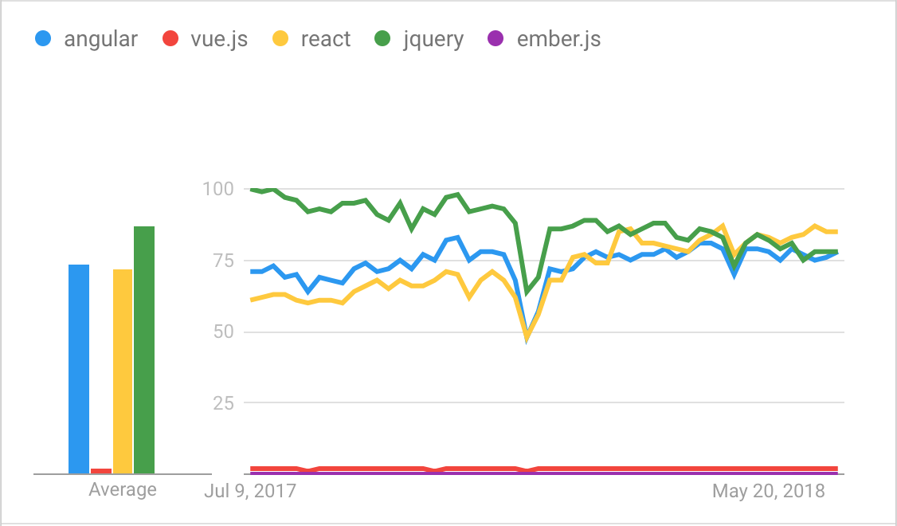
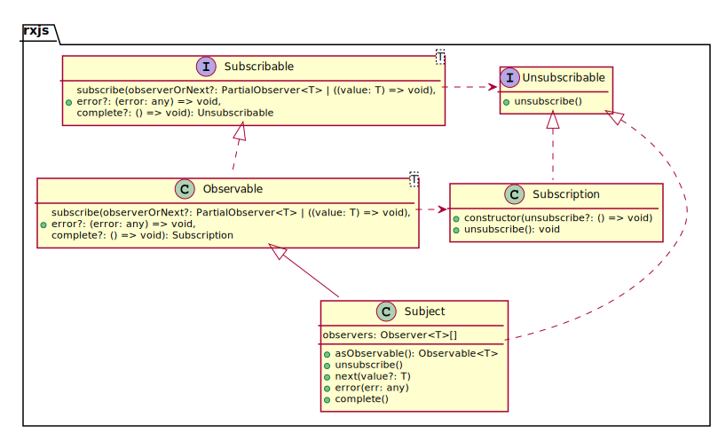
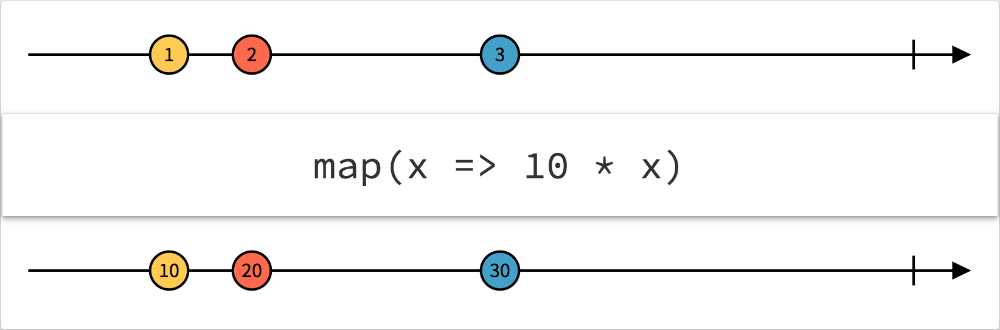
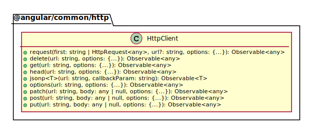

ng generate component <name>Cours Angular
Historique HTML
Statique
Dynamique et généré côté serveur
p.e. PHP
Ajout de logique côté client
JavaScript
Architecture actuelle
Données générées côté serveur
Mise à disposition via REST/JSON
Logique côté client
JavaScript
Frameworks et librairies Javascript
Tendances

Angular
Conçu comme projet 20% chez Google
Par Miško Hevery
AngularJS, 2, 4, 5 ou 6 ?
AngularJS:
Beaucoup de projets en maintenance
Angular 2, 4, 5, 6
Basés sur TypeScript
Basés sur les composants
Concepts Angular
- Component
Ensemble constitué d’une vue, de données et de la logique associée. Toute application a au moins un composant racine
- Service
Fournit des fonctionnalités qui ne sont pas liées aux vues. Utilisé par des composants, via l’injection
- Module
Collection de code lié fonctionnellement. Toute application a au moins un module racine
Architecture générale

Component
Contrôle un bout d’écran appelée vue
Génération de composant
Fichiers générés
| Fichier | Description |
|---|---|
| Fragment HTML |
| Feuille de style |
| Classe associée |
| Test de la classe |
Classe de composant
Classe annotée avec le décorateur @Component
Exemple
foo/foo.component.ts
@Component({
selector: 'app-foo', (1)
templateUrl: './foo.component.html' (2)
})
export class FooComponent {
/* ... */
}| 1 | Identifie la balise pour inclure le fragment |
| 2 | Référence le fichier de fragment HTML |
Fragment HTML
Appelé template dans la documentation
Permet l’utilisation d’une syntaxe spécifique
Exemple
foo/foo.component.html
<p>Please select an item</p>
<ul>
<li *ngFor="let foo of foos" (click)="select(foo)">
{{foo.bar}}
</li>
</ul>Fragment intégré
Attribut template au lieu de templateUrl
Exemple
foo/foo.component.ts
@Component({
selector: 'app-foo',
template: '<p>Hello {{ bar }}</p>' (1)
})
export class FooComponent {
bar: string;
}| 1 | Fragment intégré |
Data binding

Interpolation
Référencée par des accolades doubles
{{ }}Affiche l’attribut référencé
Exemple d’interpolation
foo/foo.component.ts
@Component({
selector: 'app-foo',
templateUrl: './foo.component.html'
})
export class FooComponent {
bar: string = "world"
}foo/foo.component.html
Hello {{ bar }}!Un autre exemple
foo.ts
export class Foo {
bar: string = "world"
}foo/foo.component.ts
@Component({
selector: 'app-foo',
templateUrl: './foo.component.html'
})
export class FooComponent {
foo: Foo = new Foo();
}foo/foo.component.html
Hello {{ foo.bar }}!Directives
Classe permettant d’ajouter du comportement aux éléments du DOM
Types de directives
- Composants
- Directive structurelle
Change la mise en page en ajoutant, supprimant ou modifiant des éléments du DOM.
Préfixé par
*
- Directives d’attribut
Change le comportement ou l’apparence d’une balise existante
Directives tierces et propriétaires
Il est possible d’importer des directives de projets tiers
Ou de créer les siennes propres
Directive ngForOf
Instancie un fragment une fois par élément contenu dans une collection
Exemple de ngForOf
foo.ts
export class Foo {
bar: string = "world"
}foo/foo.component.ts
@Component({
selector: 'app-foo',
templateUrl: './foo.component.html'
})
export class FooComponent {
foos: Foo[];
}foo/foo.component.html
<table>
<tbody>
<tr *ngFor="let foo of foos">
<td>{{ foo.bar }}</td>
</tr>
</tbody>
</table>Variables locales
| Nom | Type | Description |
|---|---|---|
|
| Index de l’élément |
|
|
|
|
|
|
| Nom | Type | Description |
|---|---|---|
|
|
|
|
|
|
Utilisation de variable locale
<table>
<tbody>
<tr *ngFor="let foo of foos; index as i">
<td>{{ i }}</td>
<td>{{ foo.bar }}</td>
</tr>
</tbody>
</table>Directive ngIf
Inclut un fragment basé sur l’évaluation d’une expression
Exemple de ngIf
foo/foo.component.ts
@Component({
selector: 'app-foo',
templateUrl: './foo.component.html'
})
export class FooComponent {
bar: boolean;
}foo/foo.component.html
<span *ngIf="bar">Hello world!</span>Exemple avec else
foo/foo.component.html
<span *ngIf="condition; else elseBlock">Hello world!</span>
<ng-template #elseBlock>
<span>Bye world!</span>
</ng-template>Directive ngClass
Ajoute des classes CSS à une balise basé sur l’évaluation d’une expression
Exemple de ngClass
foo/foo.component.ts
@Component({
selector: 'app-foo',
templateUrl: './foo.component.html'
})
export class FooComponent {
bar: boolean;
isBaz(): boolean {
// ...
}
}foo/foo.component.html
<div [class.baz]="isBaz()">
Hello world!
</div>Directive ngStyle
Ajoute un style CSS à une balise basé sur l’évaluation d’une expression
Exemple de ngStyle
foo/foo.component.ts
@Component({
selector: 'app-foo',
templateUrl: './foo.component.html'
})
export class FooComponent {
bar: boolean;
isBaz(): boolean {
// ...
}
}foo/foo.component.html
<div [style.text-decoration ? "underline" : "none"]="bar">
Hello world!
</div>Génération de directive
ng generate directive <name>Structure d’une directive
foo.pipe.ts
@Directive({ (1)
selector: '[appFoo]' (2)
})
export class FooDirective {
}| 1 | Directive indiqué par le décorateur @Directive |
| 2 | Nom de la directive dans le fragment |
Event binding
Appelle une fonction lorsqu’un élément déclenche un évènement
Exemple d' event binding
foo/foo.component.ts
@Component({
selector: 'app-foo',
templateUrl: './foo.component.html'
})
export class FooComponent {
click() { console.log("Clicked"); }
focus() { console.log("Focused"); }
}foo/foo.component.html
<button (click)="click()">Click me!</button>
<input (focus)="focus()" />Pipes
Fonction (simple) qui prend un paramètre en entrée et renvoie une valeur de retour
Appliqué via l’opérateur pipe :
|
Pipes existants
Pipes de transformation de nombres
Pipes de transformation de chaînes de caractères
Pipes d’internationalisation
Pipes divers
Transformation de nombres
| Pipe | Description |
|---|---|
| Transforme le nombre en pourcentage |
| Transforme le nombre en nombre décimal |
| Transforme le nombre en devise |
Transformation de chaînes de caractères
| Pipe | Description |
|---|---|
| Convertit la chaîne en minuscules |
| Convertit la chaîne en majuscules |
| Convertit la chaîne en minuscules, avec la première lettre de chaque mot en majuscules |
Internationalisation
Nécessite un paramètre supplémentaire de type tableau associatif
Retourne la valeur qui correspond à la clé d’entrée
| Pipe | Entrée |
|---|---|
|
|
|
|
Divers
| Pipe | Description |
|---|---|
| Transforme un |
| Transforme une |
| Transforme un tableau en sous-tableau |
| Transforme une structure JSON en chaîne |
Exemple
foo/foo.component.ts
export class FooComponent {
today: Date = new Date();
}foo/foo.component.html
<p>Today is {{ today | date: 'dd/MM/yyyy' }}</p>Génération de pipe
ng generate pipe <name>Structure d’un pipe
foo.pipe.ts
@Pipe({ (1)
name: 'foo' (2)
})
export class FooPipe implements PipeTransform { (3)
transform(value: any, args?: any): any { (4)(5)
return null;
}
}| 1 | Pipe indiqué par le décorateur @Pipe |
| 2 | Nom du pipe dans le fragment |
| 3 | Implémentation de PipeTransform optionelle mais conseillée (comme pour toutes les interfaces) |
| 4 | value est l’objet en entrée |
| 5 | args est un (des) objet(s) supplémentaires optionnels |
Services
Classe manipulant des données concentré sur une fonctionnalité précise
Services disponibles
Enormément de services disponibles, dans différents modules
Génération de service
ng generate service <name>Structure de service
foo.service.ts
@Injectable({ (1)
providedIn: 'root' (2)
})
export class FooService { }| 1 | @Injectable n’indique pas un service, mais un élément injectable |
| 2 | Périmètre de l’injection.
root indique que la classe est disponible dans toute l’application |
Principe d’injection
Pas d’instanciation "manuelle" (mot-clé
new)Le framework instancie les objets nécessaires
Et les injecte dans les objets qui en ont besoin au démarrage de l’application
Par défaut, il y a une unique instance de l’objet instancié
Exemple
foo.service.ts
@Injectable {
providedIn: 'root'
}
export class FooService { }bar.service.ts
@Injectable {
providedIn: 'root'
}
export class BarService {
constructor(private foo: FooService) { }
}Cycle de vie
changesinitdocCheckafterContentInitafterContentCheckedafterViewInitafterViewCheckeddestroy
ngOnInit()
Pour l’initialisation après l’instanciation
Par exemple, récupérer de la donnée
Pour la configuration du composant après l’injection
Exemple de ngOnInit()
foo.service.ts
@Injectable { providedIn: 'root' }
export class FooService {
getFoo(): string { /* ... */ }
}foo/foo.component.ts
@Component({
selector: 'app-foo',
template: '<p>{{ foo }}</p>'
})
export class FooComponent implements OnInit {
foo: string;
constructor(private service: FooService) { }
onInit() {
this.foo = this.service.getFoo();
}
}ngOnDestroy()
Pour la libération de ressources
Exemple de ngOnDestroy()
bar/bar.component.ts
@Component({
selector: 'app-bar',
template: '<p>{{ bar | async }}</p>'
})
export class BarComponent implements OnInit, OnDestroy {
bar: string;
constructor(private service: BarService) { }
onInit() {
this.service.getBar()
.subscribe(bar => this.bar = bar);
}
onDestroy() {
this.service.getBar()
.unsubscribe();
}
}Modules
Unité d’organisation qui délivre un ensemble cohérent de fonctionnalités techniques ou métier
Modules disponibles
Module commun
Module de routage
Module client HTTP
Module de formulaire
etc.
Génération de module
ng generate module <name>Structure de module
@NgModule({ (1)
imports: [ (2)
CommonModule
],
declarations: []
})
export class FooModule { }| 1 | @NgModule indique un module |
| 2 | Tableau des modules dépendants |
Modularisation
Tout composant, directive, service, etc. généré doit être lié à un module
Par défaut, lié à l’unique module de l’application
S’il y a plus d’un module, il faut indiquer à quel module le nouveau code est lié :
ng generate service foo --module=app
Module commun
Inclut toutes les directives courantes ngIf, ngFor, etc.
Module de routage
Permet de naviguer dans des vues différentes
Route
Paire chemin - composant
{
path : 'foo',
component: FooComponent
}Configuration du routeur
Via RouterModule.forRoot()
routing.module.ts
const routes: Routes = [
{ path: '' , component: HomeComponent },
{ path: 'foo', component: FooComponent },
{ path: 'bar', component: BarComponent }
];
@NgModule({
imports: [
RouterModule.forRoot(routes)
]
})
export class AppModule { }Utilisation dans le fragment
Via l’attribut routerLink
<ul>
<li><a routerLink="foo">Foo</a></li> (1)
<li><a routerLink="bar">Bar</a></li>
</ul>| 1 | Pas de / en début de chaîne |
<p>
<router-outlet></router-outlet> (1)
</p>| 1 | La balise sera remplacée par le composant configuré dans la route |
Caractères joker
** joue le rôle de catch all
const routes: Routes = [
{ path: 'foo', component: FooComponent },
{ path: 'bar', component: BarComponent },
{ path: '**' , component: NotFoundComponent }
];| Les routes sont ordonnées ! |
Chemin paramétré
routing.module.ts
const routes: Routes = [
{ path: 'person/:id', component: PersonDetailComponent }
];person/person-detail.component.html
<a routerLink="person/{{ index }}">Person</a>person/person-detail.component.ts
export class PersonDetailComponent {
constructor(private route: ActivatedRoute) { }
ngOnInit() {
let id = +this.route.snapshot.paramMap.get('id');
}
}Propriétés supplémentaires
const routes: Routes = [
{
path: 'foo',
component: XComponent,
data: { title: 'Foo' } (1)
},{
path: 'bar',
component: XComponent,
data: { title: 'Bar' } (1)
}
];| 1 | Récupéré via route.snapshot.data.title |
Intégration RxJS
Angular intègre nativement le framework RxJS
RxJS is a library for reactive programming using Observables, to make it easier to compose asynchronous or callback-based code.
— https://rxjs-dev.firebaseapp.com/
Bloquant et non-bloquant
- Bloquant
L’exécution de code JavaScript doit attendre jusqu’à ce qu’une opération tierce se termine. On parle de code synchrone.
- Non-bloquant
Au contraire, un code non-bloquant (ou asynchrone) n’attend pas la fin d’une telle opération.
Exemple de code asynchrone
let html = download('http://www.lolcats.com/')
// picture is undefined
download('http://www.lolcats.com/', (error, html) => { (1)
if (error) {
console.error('Download error!', error);
} else {
console.log('Download finished', html);
}
});| 1 | Fonction de callback |
Callback hell
Lorsque plusieurs appels de fonctions de callback doivent être chaînés
foo('root', (a) => {
bar(a, (b) => {
baz(b, (c) => {
qux(c, (d) => {
// Do something with d
});
});
});
});Alternatives aux callbacks
Promises
async-awaitReactive framework (RxJS)
Patron de conception Observateur

Concepts Rx
ObservableReprésente l’idée d’une collection de valeurs/évènements futurs
ObserverCollection de callbacks qui sait comment écouter les valeurs délivrées par l'
Observable
Concepts Rx
SubscriptionReprésente l’exécution d’un
Observable, utile pour annuler l’exécutionSubjectEquivalent d’un émetteur d’évènements
Diagramme de classes rxjs

Exemple de code
const source = range(1, 200); (1)
source.subscribe(i => console.log(i));| 1 | Emet la séquence d’évènements 1, 2, 3, … jusqu’à 199 |
Transformations
Le résultat d’une opération asynchrone est rarement celui nécessaire
Par exemple, sous-structure JSON sur un appel REST
Fonction pipe()
Observable.pipe() permet de transformer un Observable<X> en Observable<Z> via une série de fonctions de transformation successives
Fonctions de transformation
| Fonction | Description |
|---|---|
| Applique une fonction de transformation à chaque évènement et émet les valeurs de retour sous forme d' |
| Filtre les évènements émis par la source en émettant uniquement ceux qui répondent à un prédicat spécifique |
Fonctions de transformation
| Fonction | Description |
|---|---|
| Retourne un |
| Retourne un |
Fonctions de transformation
| Fonction | Description |
|---|---|
| Retourne un |
| Retourne un |
RxJS marbles
Diagramme interactif d’Observables Rx

Exemple de pipe()
class Pair {
k: string; v: any;
constructor(k: string, v: any) { this.k = k; this.v = v; }
}
const routes$: Observable<Pair> = from([
new Pair('', '<root>'), new Pair('foo', 'Foo'),
new Pair('bar', 'Bar'), new Pair('baz', null),
new Pair('**', { foo: 'bar' })
]);
routes$.pipe(
filter(pair => pair.v != null),
map(pair => pair.k),
skip(2))Module de client HTTP
API permettant d’effectuer des requêtes HTTP de haut niveau
Diagramme de classes HTTP

Exemple d’appel HTTP
class Response {
foo: number;
bar: string;
baz: string[];
}
http.get<FooResponse>('http://foo.com/').pipe(
map(response => response.bar)
).subscribe(bar => console.log(bar));